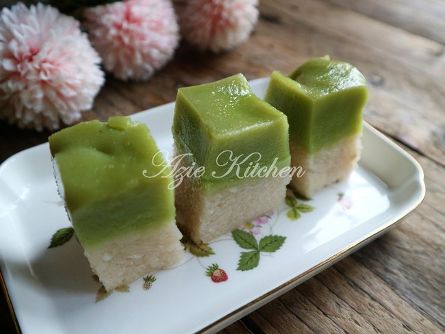

Kuih Seri Muka Istimewa Azie Kitchen


Bahan-Bahan
Loyang 10” x 10” (guna loyang bulat 10”)
Lapisan Bawah:
3 ½ cawan beras pulut rendam 1-2 jam
3 cawan santan – dari 1 biji kelapa
1 sudu kecil garam
Satukan kesemua bahan dan masukkan ke dalam loyang.
Kukus di dalam periuk pengukus yang telah mendidih airnya sehingga masak. Angkat dan ditekan tekankan dengan tangan sehingga sedikit mampat.

Nota:
Bila santan cukup, pulut tak akan melekat,jadi boleh guna loyang yang sama.
Lapisan Atas:
4 cawan santan pekat – dari 2 biji kelapa dikisar dengan air daun pandan
2 cawan gula pasir
4 biji telur – saiz B
1 cawan tepung gandum
1 sudu kecil garam
6 helai daun pandan - kisar dengan 2 cawan air
Sedikit pewarna hijau
Cara-cara:
1.Kisar daun pandan dengan 2 cawan air dan tapis airnya. Masukkan air daun pandan ke dalam kelapa parut dan blend untuk mendapatkan 4 cawan santan yang diperlukan. Titiskan sedikit pewarna hijau.
2.Telur dan gula dipukul seketika agak agak gula hancur sedikit. Tak perlu hancur betul betul pun. Masukkan 2 cawan santan terlebih dulu, pukul lagi sekejap.
3.Masukkan tepung dan kacau rata sebelum masukkan baki santan. Jangan terlebih pukul untuk menghasilkan permukaan kuih yang rata.
4.Masukkan loyang lapisan bawah ke dalam pengukus dan kukus sehingga panas, baru ditapis adunan ke atasnya dengan perlahan lahan di sekeliling loyang.
5.Kukus selama 45 minit sehingga 1 jam atau sehingga masak. Mula mula kukus dengan api kuat dalam 10 minit. Bila nampak permukaan menggelembung, buka penutup dulu untuk keluarkan wap sehingga dah turun, baru tutup semula.
6.Untuk 5 minit terakhir, buka penutup pengukus dan kukus tanpa penutup untuk mengeringkan air di permukaan kuih. Cucuk dengan lidi, jika tidak melekat menandakan lapisan atas telah masak.
7.Setelah betul betul sejuk, baru dipotong dengan pisau bersaiz kecil.
Lapisan Atas:
1.Boleh dimasakkan seketika lapisan atas, agak agak ianya keluar wap sahaja.
2.Boleh gantikan 1 cawan santan dengan 1 cawan air panas mendidih.
3.Balut penutup pengukus dengan tuala atau kain tebal untuk mengelakkan air menitis di atas permukaan kuih. Pastikan penutup pengukus bertutup rapat.
4.Api biar sederhana sahaja, jangan besar kerana kuih akan menggelembung dan tak cantik.
Tips Memotong:
Untuk dapatkan potongan cantik,pastikan kuih seri muka anda telah sejuk betul dan barulah dipotong.
Celupkan pisau ke dalam air panas, lap dan potong. Sekiranya ada pulut melekat di pisau, bersihkan dulu. Celup pisau ke dalam air dan ulanglah sehingga selesai. Boleh gunakan pisau plastik atau pisau besi.
Credit: Azie Kitchen